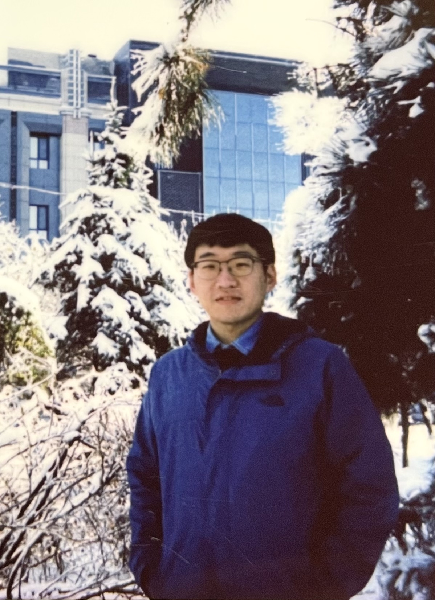

Tuo Shi
Postdoctoral Researcher
Department of Computer Science
Aalto University
Email: tuo.shi [AT] aalto.fi
Address: Konemiehentie 2, Espoo, Finland
About
Hi, I am Tuo Shi. I will join Shenzhen University of Advanced Technology (深圳理工大学) as an Assistant Professor in August 2026. I am currently a postdoctoral researcher at the Department of Computer Science, Aalto University, supervised by Prof. Mario Di Francesco and Prof. Bo Zhao. Previously, I was a postdoctoral researcher at the Department of Computer Science, City University of Hong Kong, supervised by Prof. Jianping Wang. Before that, I was an associate research fellow at the College of Intelligence and Computing, Tianjin University.
I received my PhD degree in Computer Science (in 2021) from the Massive Data Computing
Lab, Harbin Institute of Technology , advised by
Prof. Jianzhong Li.
I also worked as a visiting student at George Washington University from 2019 to 2020,
advised by Prof. Xiuzhen Cheng.
, advised by
Prof. Jianzhong Li.
I also worked as a visiting student at George Washington University from 2019 to 2020,
advised by Prof. Xiuzhen Cheng.
News
- Aug 2026I will join Shenzhen University of Advanced Technology (深圳理工大学) as an Assistant Professor.
- Jan 2026Our paper SHARP is accepted to VLDB 2026.
- Oct 2025Our paper EARL appears at the SOSP 2025 Workshop on Systems for Agentic AI.
- May 2025Invited talk at the Helsinki CS Theory Seminar, Aalto University.
Research Interests
Standing at the intersection of machine learning and computer systems, I see intelligent computing at a turning point. I aim to build resource-aware intelligent systems that unite algorithmic intelligence with system-level orchestration, making AI more efficient, reliable, and sustainable.
Guided by this vision, my research focuses on resource-efficient computing for intelligent systems across diverse hardware and system scales, ranging from highly constrained edge devices, through real-time autonomous platforms, to large-scale machine learning infrastructures.
More concretely, my work centers on three directions:
- Efficient Agentic AI Systems agent orchestration, multi-agent collaboration, scalable agent runtimes
- Edge Intelligence on-device LLM inference, cloud–edge collaborative intelligence
- Efficient Autonomous Systems autonomous driving, real-time embodied intelligence, energy-efficient autonomy
Across these scales, resources are always the bottleneck — only the nature of the bottleneck changes with scale. Hover over a scale to see how.
At small scale, resources are too limited to reliably complete the task. My goal is to enable task execution under limited resources.
At moderate scale, there are some resources, but not enough to meet users’ real-time demands. My goal is to improve task performance under moderate resources.
At large scale, resources are abundant, yet the tasks are huge and just as resource-hungry. My goal is to optimize cost efficiency for resource-hungry tasks.
Selected Conference Papers (Google Scholar)
- VLDB'26
SHARP: Shared State Reduction for Efficient Matching of Sequential Patterns
Proceedings of the VLDB Endowment (CCF A)
- SAA'25
EARL: Efficient Agentic Reinforcement Learning Systems for Large Language Models
Workshop on Systems for Agentic AI @ ACM SOSP
- INFOCOM'25
Designing and Implementing AoI-Optimized Scheduling for Autonomous Driving Systems
IEEE International Conference on Computer Communications (CCF A)
- INFOCOM'24
Minimizing Latency for Multi-DNN Inference on Resource-Limited CPU-Only Edge Devices
IEEE International Conference on Computer Communications (CCF A)
- ICDCS'22
Query Recombination: To Process a Large Number of Concurrent Top-k Queries towards IoT Data on an Edge Server
IEEE International Conference on Distributed Computing Systems (CCF B)
- ICDCS'19
The Energy-Data Dual Coverage in Battery-Free Sensor Networks
IEEE International Conference on Distributed Computing Systems (CCF B)
- INFOCOM'18
Coverage in Battery-Free Wireless Sensor Networks
IEEE International Conference on Computer Communications (CCF A)
- INFOCOM'17
Constructing Connected Dominating Sets in Battery-Free Networks
IEEE International Conference on Computer Communications (CCF A)
- INFOCOM'16
Adaptive Connected Dominating Set Discovering Algorithm in Energy-Harvest Sensor Networks
IEEE International Conference on Computer Communications (CCF A)
Selected Journal Papers (Google Scholar)
- TVT'24
Enhancing the Safety of Autonomous Driving Systems Via AoI-Optimized Task Scheduling
IEEE Transactions on Vehicular Technology
- TMC'24
An Efficient Processing Scheme for Concurrent Applications in the IoT Edge
IEEE Transactions on Mobile Computing (CCF A)
- IOT-J'23
Battery-Free Wireless Sensor Networks: A Comprehensive Survey
IEEE Internet of Things Journal (中科院一区)
- TNET'23
Services Management and Distributed Multihop Requests Routing in Mobile Edge Networks
IEEE/ACM Transactions on Networking (CCF A)
- TMC'22
A Novel Framework for the Coverage Problem in Battery-Free Wireless Sensor Networks
IEEE Transactions on Mobile Computing (CCF A)
- TOSN'21
Joint Deployment Strategy of Battery-Free Sensor Networks with Coverage Guarantee
ACM Transactions on Sensor Networks (CCF B)
- IOT-J'20
Distributed Query Processing in the Edge-Assisted IoT Data Monitoring System
IEEE Internet of Things Journal (中科院一区)
- TOSN'19
Dominating Sets Construction in RF-Based Battery-Free Sensor Networks with Full Coverage Guarantee
ACM Transactions on Sensor Networks (CCF B)
- IOT-J'18
Task Scheduling in Deadline-Aware Mobile Edge Computing Systems
IEEE Internet of Things Journal (中科院一区)
- TNET'17
Exploring Connected Dominating Sets in Energy Harvest Networks
IEEE/ACM Transactions on Networking (CCF A)
Projects
- Resources Allocation in Edge Servers for the Sensory Data Query. Young Scientists Fund of the National Natural Science Foundation of China, PI, Jan. 2023 – Dec. 2025.
- IoT Data Enhanced DNN Inference in Collaborative Edge Computing. CCF-Baidu Open Fund, PI, Aug. 2021 – Aug. 2022.
Awards
- 2024 — CIKM Distinguished Reviewer Award
- 2022 — ACM SIGCOMM China Doctoral Dissertation Award
- 2021 — Outstanding Ph.D. Graduate, Harbin Institute of Technology
- 2019 — Baidu Scholarship (Top 20)
- 2018 — National Scholarship for Ph.D. Candidate
- 2015 — National Scholarship for Ph.D. Candidate
Teaching
- Fall 2024–2025. CS-E4780 Scalable Systems and Data Management, Aalto University. (Co-teacher)
- Fall 2022. Operating System, Tianjin University. (Teaching Assistant)
- Fall 2018. Database Management, Harbin Institute of Technology. (Teaching Assistant)
- Spring 2016–2017. Computational Complexity, Harbin Institute of Technology. (Teaching Assistant)
- Fall 2015. Data Structure, Harbin Institute of Technology. (Teaching Assistant)
- Spring 2014. Compiler Principles, Harbin Institute of Technology. (Teaching Assistant)
Student Supervision
- Master thesis on “Observability in Machine Learning Systems Using eBPF”, Mr. Ingi Þór Sigurðsson, Jan.–Aug. 2025, Aalto University, Finland. (Co-Supervisor)
- Master thesis on “Performances and Trade-offs between Real-Time and Micro-Batch Distributed Stream Processing Systems”, Mr. Binh Pham, Dec. 2024–Jun. 2025, Aalto University, Finland. (Co-Supervisor)
- Master thesis on “Research on General DNN Inference Optimization Techniques for Resource-Constrained Edge Devices”, Mr. Tao Wang, Sep. 2022–Jun. 2024, Tianjin University, China. (Supervisor — results published at IEEE INFOCOM 2024)
Talks
- May 2025: Invited Talk at Helsinki CS Theory Seminar. Machine Learning Task Processing Under Resource Constraints. Aalto University, Finland.
- Aug. 2024: Invited Talk at China Database Strategic Seminar Series. Task Processing on Resource-Limited Edge Networks. Virtual Event, China.
- Nov. 2022: Invited Talk at the International Conference on Advanced Cloud and Big Data. Service Placement and Task Processing in Edge Computing. China.
- Jul. 2022: ICDCS. Query Recombination: To Process a Large Number of Concurrent Top-k Queries towards IoT Data on an Edge Server. Bologna, Italy (Virtual).
- Jul. 2022: Invited Talk at Young Scholars Forum on IoT Big Data Processing. Virtual Event, China.
- Jul. 2019: ICDCS. The Energy-Data Dual Coverage in Battery-Free Sensor Networks. Dallas, USA.
- May 2018: INFOCOM. Coverage in Battery-Free Wireless Sensor Networks. Honolulu, USA.
- May 2017: INFOCOM. Constructing Connected Dominating Sets in Battery-Free Networks. Atlanta, USA.
- May 2016: INFOCOM. Adaptive Connected Dominating Set Discovering Algorithm in Energy-Harvest Sensor Networks. San Francisco, USA.
Editorial Board
- Associate Editor, SN Computer Science (Springer Nature)
Program Committees
- ACM International Conference on Information and Knowledge Management (CIKM 2024)
- International Workshop on Databases and Machine Learning (DBML 2023, 2024)
- IEEE International Conference on Sensing, Communication, and Networking (SECON 2022, 2023, 2024, 2026)
- International Conference on Wireless Algorithms, Systems, and Applications (WASA 2021, 2022)
Peer Review
- IEEE Transactions on Mobile Computing (TMC)
- ACM/IEEE Transactions on Networking (TON)
- IEEE Journal on Selected Areas in Communications (JSAC)
- IEEE Transactions on Knowledge and Data Engineering (TKDE)
- IEEE Transactions on Parallel and Distributed Systems (TPDS)
- IEEE Transactions on Vehicular Technology (TVT)
- IEEE Transactions on Wireless Communications (TWC)
- IEEE Internet of Things Journal (IOT-J)
- IEEE Transactions on Network Science and Engineering (TNSE)
- IEEE Transactions on Sensor Networks (TOSN)